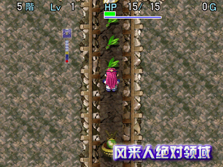
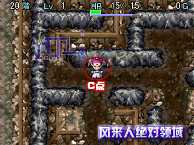

|
风来之西林外传 ～女剑士飞鸟见参～
◆ ムラドの试练图文攻略 ◆
作者：kenyo
『风来人绝对领域』版权所有，禁无断转载！
1F 愤怒飞天小猪猪
Tips：使用ゾワゾワの物让2个小猪猪进入心神不宁状态向后攻击，再用イカリの杖让小猪猪愤怒，走到贴近河流的地方等小猪猪的心神不宁状态消失后就可被它们的特殊能力送过河。
2F ずるいンドゥバ
Tips：那个草是ンドゥバ所变，拾起マムルの箱走到草前面1格远的地方向楼梯处投掷，待マムル走到草上时和它交换位置（按住加速键）就可通过。
3F 孤岛内战
Tips：向ノロ`ジョ投掷キグニ族のN，诱导其逐个干掉其他怪物后再用鏊替えの杖和她交换位置。
4F 小孤岛的迷惑
Tips：拾起99支箭向最右边的孤岛放15之箭，接着踩踏モンスタ`のF将弓箭变成怪物，之后踩踏弹簧就可去到中间的小孤岛。
5F 吹飞激光
Tips：向上拾起所有的道具，按“よくきき草→弟切草→命の草”的顺序提升HP最大值，待HP回复满之后走近シンロン就会被它的吹飞激光送至上边的岛，向左走一步避免被激光再次击中，装备不婴味芎缶涂梢宰叩铰ヌ荽Α

6F 脱出！番犬追捕！
Tips：利用一方通行のF和时间差脱出。参考步骤：空挥一次，踩下方的机关，踩左方的机关，踩上方的机关，拾起つるはし，踩上方的机关，踩左边的机关，装备つるはし破坏上方的壁，踩右边的机关，破坏下方的壁，空挥2次，踩左边的机关，踩下方的机关，这时会被LV1的透明怪挡住，径直向左走就可脱出。
7F 撞钟！曲折腕轮的妙用！
Tips：非常简单，在如图所示的位置装备まがりの腕之后对右上方向射箭就可被圆木撞过河。
8F ンドゥバ的活用
Tips：向草投掷マムルの箱，和マムル交换位置可拾起ンドゥバ，收起マムルの箱，向上方的岛投掷ンドゥバ之后再用鏊替えの杖与其交换位置，对右边的楼梯处投掷マムルの箱，再投掷鏊替えの杖与其交换位置，下楼梯。
9F 新发卖！美味烧蜥蜴！
Tips：拾起2个杖后走到左边尽头处，待LV3的千手蜥蜴走到相距1格远的地方时，向其投掷火ばしらの杖，接着使用吹飞杖，然后空挥就可看着千手蜥蜴被活活烧死。
10F 突破！浮游龟壳龙的拦截！
Tips：这个有点难，利用ア`スニ`ドル变换成球体状态的时间差接近楼梯，走错一步都不行。参考步骤：向下走3步，向上走6步，向右下走3步，向右走5步。
11F 魔法反射
Tips：利用クロウ丸的魔法反射能力来突破。首先拾起吹飞杖将左边的一时忍耐之杖吹到房间最左端，接着对クロウ丸投掷吹飞杖会被吹到房间最左端，拾起一时忍耐之杖对クロウ丸使用就可脱出。
12F 电解反应
Tips：利用水可以导电的原理来杀敌。参考步骤：向上拾起いかずちの杖，向左下走一步，对左边的鱼使用杖2次，对右上的鱼使用杖，向左走5步，对鱼投掷杖，直接攻击2次，下楼梯。
13F 脱出！骸骨龙追杀！
Tips：拾起大炮之弹，向下走一步，向右和右上各发射一枚炮弹，利用斜角绕过水路到楼梯处。
14F 根绝蚁巢
Tips：在原房间拖延一定时间待蚂蚁掘开楼梯再将之根绝。参考步骤：拾起毒草，对袋鼠投掷，右下2步拾起远投腕轮。左4步拾起根绝卷物，上2步拾起高飞草，右上2步，装备腕轮，右2步，下2步拾起高飞草，下2步，左4步，上4步，右2步，向上投掷根绝卷物，吃高飞草。
15F 突破！无头怪罗汉阵！
Tips：无头怪的射程为3格远，行走时注意射程范围。参考步骤：右下1步，右上1步，右1步，右上1步，右3步，右下1步，右1步，右上1步，右下1步，右上1步，右下1步。
16F 巨岩纷飞
Tips：利用河童扔到保存之壶的毒草干掉洞窟マムル升级后就可以承受巨岩的攻击。参考步骤：拾起保存之壶，空挥2次，左1步，空挥1次，右1步，对洞窟マムル投掷毒草，下楼梯。
17F 愤怒パ王
Tips：对パ王使用愤怒之杖它就会不断用特技而不会直接攻击，再待其停发特技喘息的空隙接近楼梯，至于那个サトリの盾其实作用不大，装不装都行。
18F 人道毁牛 ～龙炎刑～
Tips：注意区分牛战士的颜色，对于LV3的牛战士使用祝福状态的龙炎草。在よくきき草效果消失时应该还剩下1个龙炎草和2头牛战士，使用龙炎草之后肉搏即可。
19F 火炎入道阵列
Tips：一开始尽量引诱火炎入道往房间上方移动，再借助壁的阻挡迅速由下方逃脱。参考步骤：右上3步，右3步，左2步，左下2步，下2步，右下2步，右4步，右上1步，右6步，右上2步。
20F 古墓丽影
Tips：这个也是有点难，一些人可能会被故意设下的陷阱迷惑住。
参考步骤：拾起杖，向上使用杖前进2步，向左使用杖前进6步，向上使用杖前进6步，向左使用杖前进4步（此点设为A点，如图所示）。
向下使用杖前进7步，向左使用杖前进3步，向下进1步拾起杖之后回到A点。向左走4步，向下使用杖前进2步（此点设为B点，如图所示），向左使用杖前进4步（此点设为C点，如图所示）。向下使用杖后返回B点。

返回B点后向下进4步，向右使用杖前进4步，向左下的ちゅうチンタラ使用杖，向下使用杖1次，投掷杖干掉ちゅうチンタラ。
干掉ちゅうチンタラ后向下进1步，ラシャ`ガ觉醒，之后向上进5步，右进4步，下进4步，左进4步，下进2步，右进1步拾起一时忍耐之杖，对ラシャ`ガ使用此杖，向左进3步拾起サトリのつるはし后装备，返回C点。向左进2步，OK，现在开始掘墓。上进2步，右进3步，上进2步，左进3步，上进1步拿到根绝卷物，再继续掘墓，然后用根绝卷物将ラシャ`ガ根绝即可PASS。
|